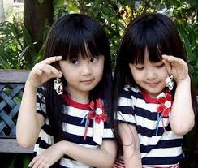

Baby shop

This also helps him learn to talk, as it is from listening to your voice that he will learn to use language. Good speaking and listening skills help him to become a good reader and writer, because language skills form the foundation for literacy. Communicating, talking and interaction help develop social skills and good relationships. This will show that you love and respect him, enhancing self-esteem. Spending time talking with him will help the two of you form a close bond – communication is the basis of your relationship with each other. Most brain development occurs from birth to age two, so babies and toddlers need stimulation as much as they need nourishing food. The best way to stimulate babies’ brains is to connect with them through ‘mutual gaze’ and talk to them from the moment they are born.
Baby products
- baby carrier
- suckling bottle
- baby walker
- shakers
- baby shawl
- napkins
best diappers
- Pampers
- Huggies
- Happy baby
- Thongies
- Drypers
- MammyPoko
"Making the decision to have a child—it's momentous. It is to decide forever to have your heart go walking outside your body,"Getting a burp out of your little thing is probably the greatest satisfaction I've come across. It's truly one of life's most satisfying moments." This Winnie The Pooh newborn quote by A.A. Milne really makes a cute wall decoration for baby's room. It is suitable for baby girls as well as baby boys: Sometimes, the smallest things take up the most room in your heart.